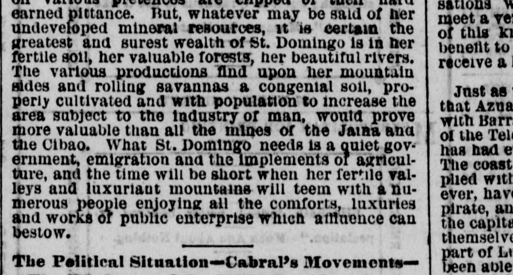
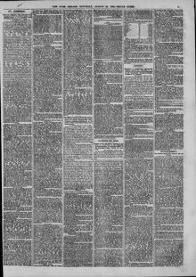

Domingo needs is a quiet government, emigration and the Implements or agricultureDomingo necesita es un gobierno tranquilo, emigración y los implementos o
The New York Herald. New York [N.Y.], August 28, 1869. Page 11. View the originalVer el original


See the full pageVer la página completaThe New York Herald reported from St. Domingo City on July 12 that President Baez was actively moving troops to put down a revolution led by Cabral, whose forces were operating against the important seaport town of Azua. The newspaper noted that President Baez was well-supported and wise in his administration, while the populace remained much impoverished by constant conflict despite unusually large crops where planting was possible.The New York Herald informó desde la ciudad de Santo Domingo el 12 de julio que el presidente Báez movilizaba tropas con diligencia para sofocar la revolución encabezada por Cabral, cuyas columnas amagaban la estratégica plaza marítima de Azua. El rotativo apuntó que el presidente Báez gozaba de sólido respaldo y buen pulso administrativo, en tanto que el pueblo llano continuaba sumamente empobrecido por las incesantes discordias bélicas, no obstante levantarse cosechas extraordinarias en las comarcas cultivables.
FULL TEXT:TEXTO COMPLETO:
ST. DOMINGO.SANTO DOMINGO.
Across the Island—La Vega Real—Beautiful Savannas—Arrival at Cotuy—Crossing the Isabella—Arrival at the Republican Capital—Natural Resources of the Island.A través de la isla—La Vega Real—Hermosas sabanas—Llegada a Cotuy—Cruce del Isabela—Llegada a la capital de la República—Recursos naturales de la isla.
ST. DOMINGO, W. I., July 8, 1869.SANTO DOMINGO, Indias Occidentales, 8 de julio de 1869.
A journey from Santiago de los Caballeros to this city, completing the trip across the island of St. Domingo, is one of those experiences which might be considered agreeable in retrospect, but would not, under ordinary circumstances, bear repetition with any degree of complacency in the same person.Un viaje desde Santiago de los Caballeros hasta esta ciudad, completando la travesía a través de la isla de Santo Domingo, es una de esas experiencias que podrían considerarse agradables en retrospectiva, pero que no, en circunstancias ordinarias, soportarían repetición con grado alguno de complacencia en la misma persona.
There is no doubt that the geologist and mineralogist would find in St. Domingo a fine field of study and exploration; but they should be men of means or represent some legitimate society of science interested in developing the resources of a country for the benefit it may be to mankind and the promotion of science, not companies formed for speculation and continually grumbling, while their employés on various pretences are clipped of their hard earned pittance. But, whatever may be said of her undeveloped mineral resources, it is certain the greatest and surest wealth of St. Domingo is in her fertile soil, her valuable forests, her beautiful rivers. The various productions find upon her mountain sides and rolling savannas a congenial soil, properly cultivated and with population to increase the area subject to the industry of man, would prove more valuable than all the mines of the Jaina and the Cibao. What St. Domingo needs is a quiet government, emigration and the implements of agriculture, and the time will be short when her fertile valleys and luxuriant mountains will teem with a numerous people enjoying all the comforts, luxuries and works of public enterprise which affluence can bestow.No hay duda de que el geólogo y el mineralogista encontrarían en Santo Domingo un fino campo de estudio y exploración; pero deberían ser hombres de medios o representar alguna sociedad legítima de ciencia interesada en desarrollar los recursos de un país para el beneficio que pueda ser para la humanidad y la promoción de la ciencia, no compañías formadas para la especulación y continuamente refunfuñando, mientras sus empleados bajo diversos pretextos son despojados de su mezquina paga duramente ganada. Pero, dígase lo que se diga de sus recursos minerales sin desarrollar, es cierto que la mayor y más segura riqueza de Santo Domingo está en su fértil suelo, sus valiosos bosques, sus hermosos ríos. Las diversas producciones encuentran en las laderas de sus montañas y en sus ondulantes sabanas un suelo congenial, debidamente cultivado y con población para aumentar el área sujeta a la industria del hombre, probarían ser más valiosas que todas las minas del Jaina y del Cibao. Lo que Santo Domingo necesita es un gobierno tranquilo, emigración y los implementos de la agricultura, y corto será el tiempo cuando sus fértiles valles y lujuriantes montañas rebosen de un pueblo numeroso que disfrute de todas las comodidades, lujos y obras de empresa pública que la afluencia puede otorgar.